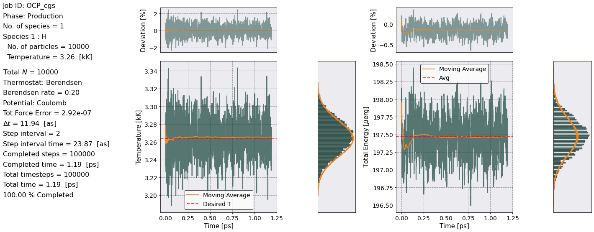
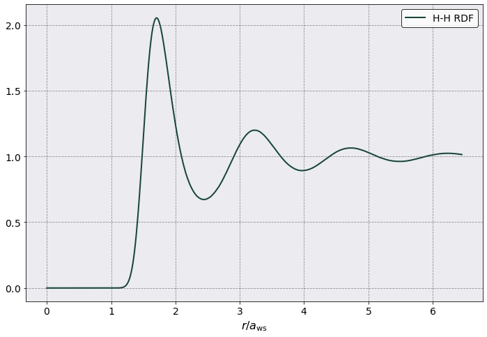
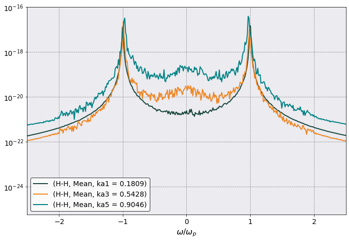
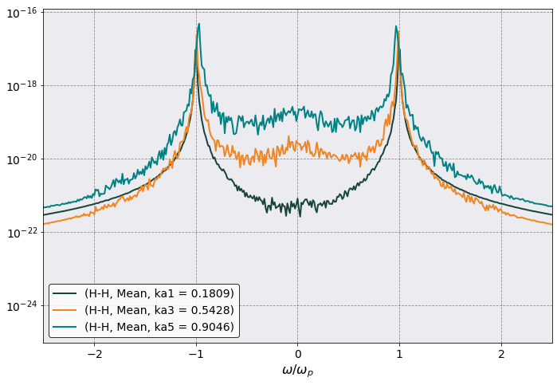
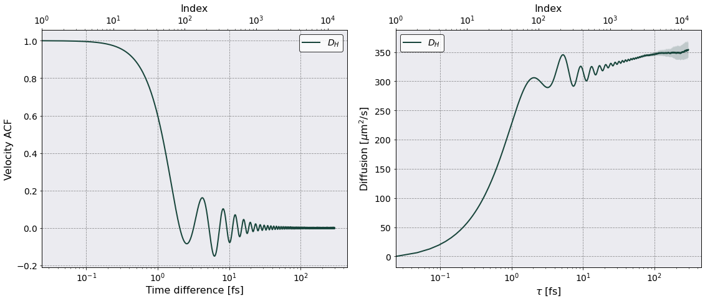

One Component Plasma (OCP)¶
Oh the good ol’ OCP. The YAML input file can be found at input_file and this notebook at notebook.
[1]:
# Import the usual libraries
%pylab
%matplotlib inline
import os
plt.style.use('MSUstyle')
# Import sarkas
from sarkas.processes import Simulation, PostProcess, PreProcess
# Create the file path to the YAML input file
input_file_name = os.path.join('input_files', 'coulomb_cgs.yaml')
Using matplotlib backend: Qt5Agg
Populating the interactive namespace from numpy and matplotlib
Simulation¶
The following code is commented out since the simulation has been run before. We leave it here so that it is easy to copy and paste in your notebook.
[2]:
# sim = Simulation(input_file_name)
# sim.setup(read_yaml=True)
# sim.run()
PostProcessing¶
[3]:
postproc = PostProcess(input_file_name)
postproc.setup(read_yaml=True)
postproc.therm.setup(postproc.parameters)
postproc.therm.temp_energy_plot(postproc)
* * * * * * * * * * * * * * * * * * * * * * * * * * * * * * * * * * * * * * * * * * * * * * * * * *
Postprocessing
* * * * * * * * * * * * * * * * * * * * * * * * * * * * * * * * * * * * * * * * * * * * * * * * * *
Job ID: OCP_cgs
Job directory: Simulations/OCP_cgs
PostProcessing directory:
Simulations/OCP_cgs/PostProcessing
Equilibration dumps directory: Simulations/OCP_cgs/Simulation/Equilibration/dumps
Production dumps directory:
Simulations/OCP_cgs/Simulation/Production/dumps
Equilibration Thermodynamics file:
Simulations/OCP_cgs/Simulation/Equilibration/EquilibrationEnergy_OCP_cgs.csv
Production Thermodynamics file:
Simulations/OCP_cgs/Simulation/Production/ProductionEnergy_OCP_cgs.csv

Radial Distribution Function¶
[4]:
postproc.rdf.setup(postproc.parameters)
postproc.rdf.compute()
Radial Distribution Function Calculation Time: 0 sec 1 msec 101 usec 204 nsec
[5]:
postproc.rdf.plot(scaling = postproc.rdf.a_ws, xlabel = r'$r/a_{\rm ws}$')
[5]:
<AxesSubplot:xlabel='$r/a_{\\rm ws}$'>

Calculate the Pressure from the RDF
[19]:
rdf = np.copy(postproc.rdf.dataframe["H-H RDF"].to_numpy())
r = np.copy(postproc.rdf.dataframe["Distance"].to_numpy())
n_beta = 1.0 / ( postproc.parameters.total_num_density * postproc.therm.dataframe["Temperature"].mean() * postproc.parameters.kB)
pressure = postproc.therm.compute_pressure_from_rdf(r, rdf, 'Coulomb', postproc.potential.matrix)
print('The excess pressure is = {:.4f} / (n k_B T)'.format(pressure*n_beta))
The excess pressure is = -26.1939 / (n k_B T)
Dynamic Structure Factor¶
[56]:
from sarkas.tools.observables import DynamicStructureFactor
dsf = DynamicStructureFactor()
dsf.max_ka_value = 10
dsf.angle_averaging = 'principal_axis'
dsf.no_slices = 4
dsf.setup(postproc.parameters)
dsf.pretty_print()
====================== Dynamic Structure Factor ======================
k wavevector information saved in:
Simulations/OCP_cgs/PostProcessing/k_space_data/k_arrays.npz
n(k,t) data saved in:
Simulations/OCP_cgs/PostProcessing/k_space_data/nkt.h5
Data saved in:
Simulations/OCP_cgs/PostProcessing/DynamicStructureFactor/Production/DynamicStructureFactor_OCP_cgs.h5
Data accessible at: self.k_list, self.k_counts, self.ka_values, self.frequencies, self.dataframe
Frequency Space Parameters:
No. of slices = 4
No. dumps per slice = 12500
Frequency step dw = 2 pi (no_slices * prod_dump_step)/(production_steps * dt)
dw = 0.0126 w_p = 2.1057e+13 [Hz]
Maximum Frequency w_max = 2 pi /(prod_dump_step * dt)
w_max = 78.5487 w_p = 1.3161e+17 [Hz]
Wavevector parameters:
Smallest wavevector k_min = 2 pi / L = 3.9 / N^(1/3)
k_min = 0.1809 / a_ws = 3.4252e+07 [1/cm]
Angle averaging choice: principal_axis
Maximum k harmonics = n_x, n_y, n_z = 55, 55, 55
Largest wavector k_max = k_min * n_x
k_max = 9.9505 / a_ws = 1.8839e+09 [1/cm]
Total number of k values to calculate = 165
No. of unique ka values to calculate = 55
[58]:
dsf.parse()
[59]:
import pandas as pd
pd.options.display.max_columns = 15
dsf.dataframe
[59]:
| H-H | |||||||||||||||
|---|---|---|---|---|---|---|---|---|---|---|---|---|---|---|---|
| Mean | ... | Std | |||||||||||||
| Frequencies | ka1 = 0.1809 | ka2 = 0.3618 | ka3 = 0.5428 | ka4 = 0.7237 | ka5 = 0.9046 | ka6 = 1.0855 | ... | ka49 = 8.8650 | ka50 = 9.0459 | ka51 = 9.2269 | ka52 = 9.4078 | ka53 = 9.5887 | ka54 = 9.7696 | ka55 = 9.9505 | |
| 0 | -1.316086e+17 | 2.299342e-25 | 2.601710e-25 | 1.506856e-25 | 2.238928e-25 | 1.023652e-24 | 1.302044e-24 | ... | 2.218304e-22 | 1.318253e-22 | 1.722560e-22 | 2.186809e-22 | 1.828332e-22 | 4.173647e-22 | 1.830595e-22 |
| 1 | -1.315876e+17 | 2.299341e-25 | 2.601710e-25 | 1.506856e-25 | 2.238936e-25 | 1.023652e-24 | 1.302044e-24 | ... | 2.218302e-22 | 1.318247e-22 | 1.722552e-22 | 2.186806e-22 | 1.828334e-22 | 4.173652e-22 | 1.830587e-22 |
| 2 | -1.315665e+17 | 2.299341e-25 | 2.601711e-25 | 1.506856e-25 | 2.238944e-25 | 1.023651e-24 | 1.302043e-24 | ... | 2.218301e-22 | 1.318241e-22 | 1.722544e-22 | 2.186804e-22 | 1.828335e-22 | 4.173658e-22 | 1.830580e-22 |
| 3 | -1.315455e+17 | 2.299341e-25 | 2.601712e-25 | 1.506857e-25 | 2.238952e-25 | 1.023651e-24 | 1.302043e-24 | ... | 2.218300e-22 | 1.318235e-22 | 1.722536e-22 | 2.186801e-22 | 1.828337e-22 | 4.173664e-22 | 1.830573e-22 |
| 4 | -1.315244e+17 | 2.299341e-25 | 2.601713e-25 | 1.506858e-25 | 2.238961e-25 | 1.023650e-24 | 1.302043e-24 | ... | 2.218299e-22 | 1.318229e-22 | 1.722529e-22 | 2.186799e-22 | 1.828339e-22 | 4.173671e-22 | 1.830566e-22 |
| ... | ... | ... | ... | ... | ... | ... | ... | ... | ... | ... | ... | ... | ... | ... | ... |
| 12495 | 1.315033e+17 | 2.299351e-25 | 2.601713e-25 | 1.506858e-25 | 2.238892e-25 | 1.023657e-24 | 1.302050e-24 | ... | 2.218317e-22 | 1.318285e-22 | 1.722603e-22 | 2.186826e-22 | 1.828328e-22 | 4.173628e-22 | 1.830636e-22 |
| 12496 | 1.315244e+17 | 2.299349e-25 | 2.601712e-25 | 1.506857e-25 | 2.238899e-25 | 1.023656e-24 | 1.302048e-24 | ... | 2.218314e-22 | 1.318278e-22 | 1.722594e-22 | 2.186822e-22 | 1.828329e-22 | 4.173631e-22 | 1.830627e-22 |
| 12497 | 1.315455e+17 | 2.299347e-25 | 2.601711e-25 | 1.506857e-25 | 2.238906e-25 | 1.023655e-24 | 1.302047e-24 | ... | 2.218311e-22 | 1.318272e-22 | 1.722585e-22 | 2.186819e-22 | 1.828329e-22 | 4.173634e-22 | 1.830619e-22 |
| 12498 | 1.315665e+17 | 2.299345e-25 | 2.601710e-25 | 1.506856e-25 | 2.238913e-25 | 1.023654e-24 | 1.302046e-24 | ... | 2.218308e-22 | 1.318265e-22 | 1.722576e-22 | 2.186815e-22 | 1.828330e-22 | 4.173638e-22 | 1.830610e-22 |
| 12499 | 1.315876e+17 | 2.299343e-25 | 2.601710e-25 | 1.506856e-25 | 2.238920e-25 | 1.023653e-24 | 1.302045e-24 | ... | 2.218306e-22 | 1.318259e-22 | 1.722568e-22 | 2.186812e-22 | 1.828331e-22 | 4.173642e-22 | 1.830603e-22 |
12500 rows × 111 columns
[60]:
ax = dsf.plot(scaling = dsf.total_plasma_frequency,
y = [("H-H","Mean", "ka1 = 0.1809"), ("H-H","Mean", "ka3 = 0.5428"), ("H-H","Mean", "ka5 = 0.9046")],
xlabel = r'$\omega/\omega_p$',
xlim = (-2.5, 2.5),
logy = True)
ax.legend()
[60]:
<matplotlib.legend.Legend at 0x7f0b719b5c90>

Collective Mode Dispersion¶
[61]:
w = dsf.dataframe[(" "," ","Frequencies")]/ dsf.total_plasma_frequency
ka_mesh, w_mesh = np.meshgrid(dsf.ka_values, w)
Skw = dsf.dataframe[("H-H", "Mean")]
fig, ax = plt.subplots(1,1)
pc = ax.pcolormesh(ka_mesh, w_mesh, Skw,
shading = 'auto',
norm = mpl.colors.LogNorm(vmin = 1e-22, vmax = 1e-16),
cmap='cividis')
ax.set(ylim = (0,3),
xlim = (0,8),
xlabel = r'$ka$',
ylabel = r'$\omega/\omega_p$')
plt.colorbar(pc)
[61]:
<matplotlib.colorbar.Colorbar at 0x7f0b7265a090>

Transport Coefficients¶
Diffusion¶
[20]:
from sarkas.tools.transport import TransportCoefficient
diffusion = TransportCoefficient.diffusion(postproc.parameters, no_slices = 4)
======================= Diffusion Coefficient ========================
Calculating vacf for slice 1/4.
Calculating vacf for slice 2/4.
Calculating vacf for slice 3/4.
Calculating vacf for slice 4/4.
VACF Calculation Time: 0 hrs 5 min 30 sec
Data saved in:
Simulations/OCP_cgs/PostProcessing/VelocityAutoCorrelationFunction/Production/Diffusion_OCP_cgs.h5
No. of slices = 4
No. dumps per slice = 6250
Time interval of autocorrelation function = 1.4919e-13 [s] ~ 249 w_p T
